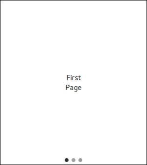

SwipeView QML Type
Enables the user to navigate pages by swiping sideways. More...
| Import Statement: | import QtQuick.Controls |
| Inherits: |
Properties
- horizontal : bool
(since QtQuick.Controls 2.3 (Qt 5.10)) - interactive : bool
(since QtQuick.Controls 2.1 (Qt 5.8)) - orientation : enumeration
(since QtQuick.Controls 2.2 (Qt 5.9)) - vertical : bool
(since QtQuick.Controls 2.3 (Qt 5.10))
Attached Properties
- index : int
- isCurrentItem : bool
- isNextItem : bool
(since QtQuick.Controls 2.1 (Qt 5.8)) - isPreviousItem : bool
(since QtQuick.Controls 2.1 (Qt 5.8)) - view : SwipeView
Detailed Description
SwipeView provides a swipe-based navigation model.

SwipeView is populated with a set of pages. One page is visible at a time. The user can navigate between the pages by swiping sideways. Notice that SwipeView itself is entirely non-visual. It is recommended to combine it with PageIndicator, to give the user a visual clue that there are multiple pages.
SwipeView { id: view currentIndex: 1 anchors.fill: parent Item { id: firstPage } Item { id: secondPage } Item { id: thirdPage } } PageIndicator { id: indicator count: view.count currentIndex: view.currentIndex anchors.bottom: view.bottom anchors.horizontalCenter: parent.horizontalCenter }
As shown above, SwipeView is typically populated with a static set of pages that are defined inline as children of the view. It is also possible to add, insert, move, and remove pages dynamically at run time.
When SwipeView is paired with another container such as TabBar, it is necessary to make a two-way binding between the currentIndex property of each control. To do this without breaking bindings, avoid setting currentIndex directly, and instead use setCurrentIndex(), for example. See Managing the Current Index for more information.
To perform an action when currentIndex changes, use the onCurrentIndexChanged property change signal handler:
onCurrentIndexChanged: { print("currentIndex changed to", currentIndex) // ... }
It is generally not advisable to add excessive amounts of pages to a SwipeView. However, when the amount of pages grows larger, or individual pages are relatively complex, it may be desirable to free up resources by unloading pages that are outside the immediate reach of the user. The following example presents how to use Loader to keep a maximum of three pages simultaneously instantiated.
SwipeView { Repeater { model: 6 Loader { active: SwipeView.isCurrentItem || SwipeView.isNextItem || SwipeView.isPreviousItem sourceComponent: Text { text: index Component.onCompleted: console.log("created:", index) Component.onDestruction: console.log("destroyed:", index) } } } }
Note: SwipeView takes over the geometry management of items added to the view. Using anchors on the items is not supported, and any width or height assignment will be overridden by the view. Notice that this only applies to the root of the item. Specifying width and height, or using anchors for its children works as expected.
See also TabBar, PageIndicator, Customizing SwipeView, Navigation Controls, Container Controls, and Focus Management in Qt Quick Controls.
Property Documentation
horizontal : bool |
This property holds whether the swipe view is horizontal.
This property was introduced in QtQuick.Controls 2.3 (Qt 5.10).
See also orientation.
interactive : bool |
This property describes whether the user can interact with the SwipeView. The user cannot swipe a view that is not interactive.
The default value is true.
This property was introduced in QtQuick.Controls 2.1 (Qt 5.8).
orientation : enumeration |
This property holds the orientation.
Possible values:
| Constant | Description |
|---|---|
Qt.Horizontal | Horizontal (default) |
Qt.Vertical | Vertical |
This property was introduced in QtQuick.Controls 2.2 (Qt 5.9).
See also horizontal and vertical.
vertical : bool |
This property holds whether the swipe view is vertical.
This property was introduced in QtQuick.Controls 2.3 (Qt 5.10).
See also orientation.
Attached Property Documentation
SwipeView.index : int |
SwipeView.isCurrentItem : bool |
This attached property is true if this child is the current item.
It is attached to each child item of the SwipeView.
SwipeView.isNextItem : bool |
This attached property is true if this child is the next item.
It is attached to each child item of the SwipeView.
This property was introduced in QtQuick.Controls 2.1 (Qt 5.8).
SwipeView.isPreviousItem : bool |
This attached property is true if this child is the previous item.
It is attached to each child item of the SwipeView.
This property was introduced in QtQuick.Controls 2.1 (Qt 5.8).
SwipeView.view : SwipeView |
This attached property holds the view that manages this child item.
It is attached to each child item of the SwipeView.